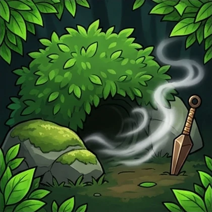
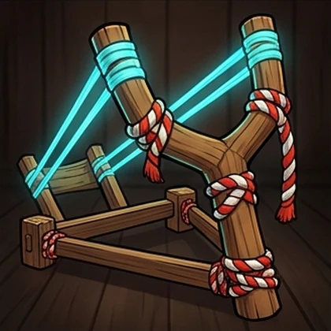

🔥 任務①
1〜3人・フルボイス
超S級・忍界大戦ビンゴ大会！
12人の推しキャラから専用ビンゴカードを選ぼう！全75枚の忍キラカード＆ボイス付き！
🍥 ビンゴであそぶ！ →
🎲 任務②
2〜6人・ひらがな


にんかい すごろく だいぼうけん！
全45マスすべてがNARUTOキャラ絵巻！らせんがん連打・すずとり・あかつきボス関門つき！
🎲 すごろくであそぶ！ →
🪵 任務③ NEW!
みんなで同時タッチ


かげぶんしん・ドロンパニック！
みんなで一斉タッチ！ボフッと丸太に変わる爽快モグラ叩き＆ラスト10秒巨大ボス連打！
🪵 ドロンパニックであそぶ！ →
🌲 任務④ NEW!
2〜4人・画面分割競争

きのぼり・チャクラダッシュ！
2〜4人で画面分割スピード競争！イガグリを避けてラーメンで100mの頂上へ超加速！
👟 きのぼり競争であそぶ！ →
🎯 任務⑤ NEW!
1〜6人・物理アクション



しゅりけん＆らせんがん・まとあてどうじょう！
指で引っ張って起爆札タルを大連鎖爆破！3投目は螺旋丸・豪火球・影分身の超必殺ショット！
🎯 まとあて道場であそぶ！ →